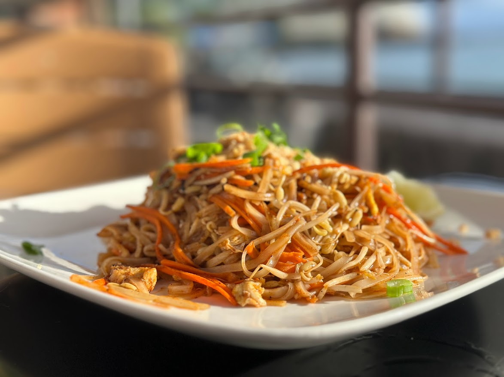
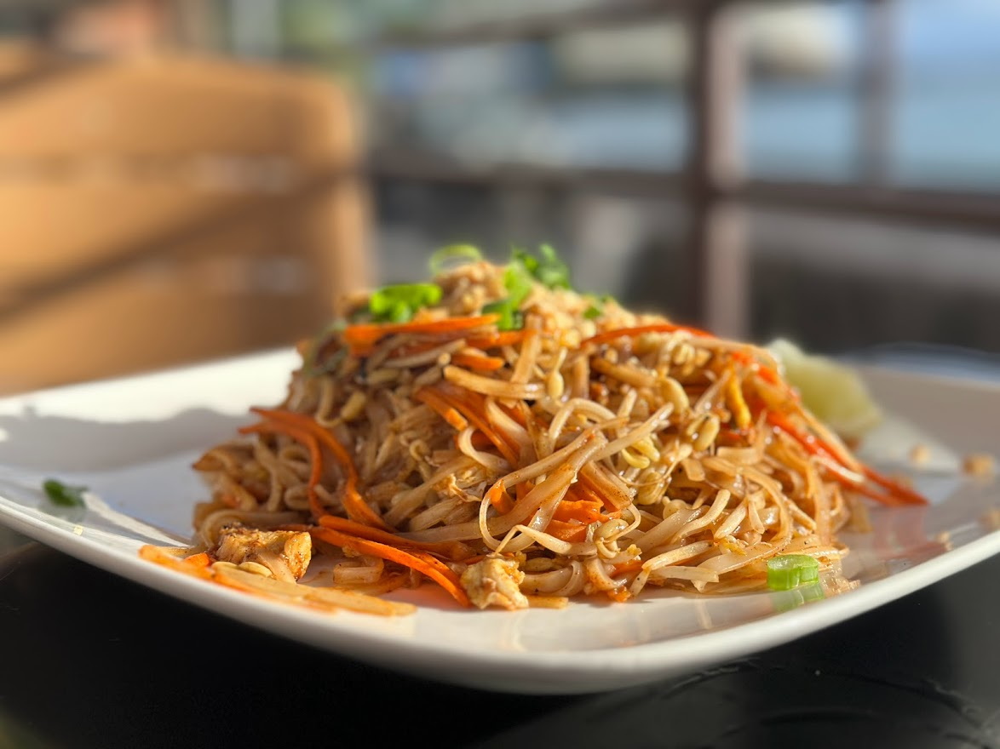
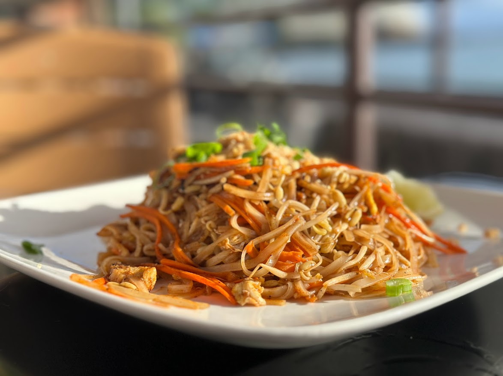
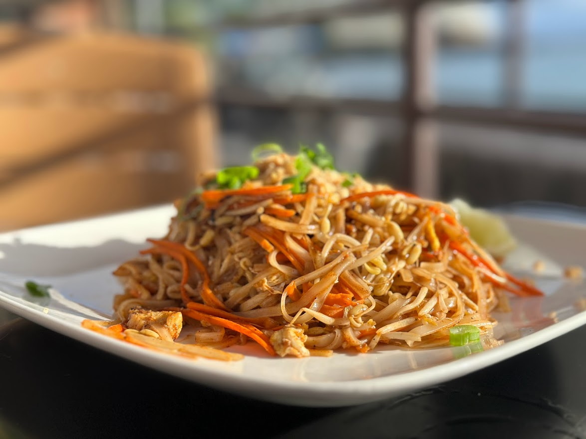

 

I’m sure this is a question you’ve asked yourself as you see us in the
Huckleberry Press, online, and on social media so let us introduce
ourselves. Our names are Zack & Brooklyn, we are a married couple that
love showcasing all the fun places to play and eat in the Inland
Northwest. We created Taste Budz to promote local businesses and expose
people to the great places all around them. Keep up with us to find your
next activity.